Química del ambiente: atmósfera, agua y química verde
title: “Química del ambiente: atmósfera, agua y química verde”
Introducción
La química del ambiente estudia cómo las sustancias naturales y las fabricadas por el ser humano interactúan en la Tierra, desde la atmósfera hasta el agua de los océanos y las aguas subterráneas (Brown et al. 2012, sec. 18.1). Conseguir su meta exige no liberar materiales tóxicos al medio, satisfacer las necesidades con recursos renovables y consumir la menor cantidad posible de energía (Brown et al. 2012, sec. 18.5).
El planeta es, en gran medida, un sistema cerrado que intercambia energía pero no materia con su entorno, de modo que todos los procesos que la humanidad lleva a cabo deberían estar en equilibrio con los ciclos naturales y con los recursos físicos del planeta (Brown et al. 2012, sec. 18.5). Por eso las tres exigencias de la meta anterior, no liberar tóxicos, usar recursos renovables y consumir poca energía, se derivan directamente del carácter cerrado del sistema (Brown et al. 2012, sec. 18.5).
La riqueza de la vida en la Tierra, representada en la fotografía de apertura del capítulo, parece única: la atmósfera, la energía recibida del Sol y la abundancia de agua son rasgos considerados necesarios para la vida (Brown et al. 2012, sec. 18.1). A medida que la tecnología ha avanzado y la población humana ha crecido, se han impuesto tensiones nuevas y mayores sobre el ambiente (Brown et al. 2012, sec. 18.1).
La química está a menudo en el corazón de los problemas ambientales, pues el crecimiento económico depende de procesos químicos que van del tratamiento del agua a los procesos industriales (Brown et al. 2012, sec. 18.1). Paradójicamente, la misma tecnología que puede contaminar proporciona también las herramientas para entender y gestionar el medio de forma beneficiosa {#sec-contaminacion-remediacion}(Brown et al. 2012, sec. 18.1).
Este capítulo aplica los principios de los capítulos anteriores, en especial la ecuación del gas ideal (?sec-ecuacion-gas-ideal) y las presiones parciales (?sec-presion-parcial) del capítulo de gases, los equilibrios ácido-base (?sec-ph) del capítulo correspondiente y la química de los no metales como el azufre y el nitrógeno, a la comprensión de cómo opera el ambiente y cómo lo afecta la actividad humana (Brown et al. 2012, sec. 18.1). Las decisiones diarias del consumidor reflejan las de los expertos y los líderes gubernamentales: en cada decisión se deben pesar los costos frente a los beneficios, y los impactos ambientales suelen ser sutiles y no inmediatamente evidentes (Brown et al. 2012, sec. 18.1).
La atmósfera: capas, composición y presión
La troposfera es la región atmosférica que toca la superficie terrestre, donde la temperatura normalmente disminuye con la altitud hasta un mínimo de unos 215 K a unos 10 km de altura {#sec-atmosfera-capas}(Brown et al. 2012, sec. 18.1). El viento, la lluvia y el cielo despejado, todo lo que normalmente llamamos clima, ocurre en esta capa, donde vive casi toda la humanidad, y los aviones comerciales vuelan justo en el límite superior de la troposfera, la tropopausa, a unos 10 km, unos 33 000 pies sobre la Tierra (Brown et al. 2012, sec. 18.1).
Por encima de la tropopausa la temperatura del aire aumenta con la altitud hasta un máximo de unos 275 K a unos 50 km, y la región entre 10 y 50 km se llama estratosfera; más arriba están la mesosfera y la termosfera (Brown et al. 2012, sec. 18.1). Los extremos de temperatura que forman las fronteras entre regiones adyacentes llevan el sufijo «pausa», y esas fronteras importan porque los gases se mezclan lentamente a través de ellas: los contaminantes generados en la troposfera pasan por la tropopausa y llegan a la estratosfera solo muy despacio (Brown et al. 2012, sec. 18.1).
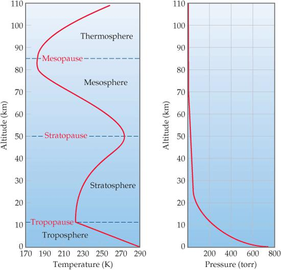
La presión atmosférica disminuye con la elevación, declinando mucho más rápido en las altitudes bajas que en las altas por la compresibilidad del aire: desde un valor medio de 760 torr al nivel del mar, unos 101 kPa, desciende a 2,3 × 10⁻³ torr a 100 km y a solo 1,0 × 10⁻⁶ torr a 200 km (Brown et al. 2012, sec. 18.1).
La troposfera y la estratosfera juntas suman el 99,9 % de la masa atmosférica, y el 75 % de esa masa está en la troposfera, por lo que la mayor parte de la química ambiental se concentra en estas dos regiones (Brown et al. 2012, sec. 18.1). La Figura Figura 26.1 resume el perfil de temperatura y de presión de las cuatro regiones descritas (Brown et al. 2012, fig. 18.1).
El aire seco cerca del nivel del mar está compuesto casi por completo de N₂ y O₂, que juntos constituyen cerca del 99 % del aire, mientras los gases nobles y el CO₂ forman la mayor parte del resto, y además hay trazas de muchas otras sustancias (Brown et al. 2012, sec. 18.1). La proporción de esas trazas se expresa a menudo en partes por millón, unidad que para sustancias en disolución acuosa indica gramos de sustancia por millón de gramos de disolución, pero que para gases indica una parte por volumen en un millón de volúmenes del total (Brown et al. 2012, sec. 18.1).
Como el volumen es proporcional al número de moles de gas por la ecuación del gas ideal, la fracción de volumen y la fracción molar son la misma, y 1 ppm de un componente traza equivale a 1 mol de ese componente en un millón de moles de aire, es decir, la concentración en ppm es la fracción molar multiplicada por 10⁶ (Brown et al. 2012, sec. 18.1).
Brown presenta la composición del aire seco con una tabla de componentes mayores: la fracción molar de CO₂ es 0,000382, lo que corresponde a 382 ppm, y junto al dióxido de carbono figuran el neón, el helio, el metano, el criptón, el hidrógeno, el óxido nitroso, el monóxido de carbono y el ozono en concentraciones de trazas (Brown et al. 2012, sec. 18.1). Las fuentes y concentraciones típicas de estos constituyentes menores se recogen en la tabla correspondiente del texto de Brown, que distingue sus orígenes naturales de los antropogénicos (Brown et al. 2012, sec. 18.1).
La atmósfera es bombardeada sin cesar por radiación y partículas energéticas del Sol, con efectos químicos y físicos profundos sobre todo en las regiones superiores, por encima de unos 80 km, y la gravedad hace que los átomos y moléculas más pesados tiendan a hundirse, dejando los más ligeros en lo alto (Brown et al. 2012, sec. 18.1). Por todos estos factores la composición atmosférica no es uniforme, y las reacciones fotoquímicas que examinamos a continuación ocurren de forma distinta según la altitud (Brown et al. 2012, sec. 18.1).
La fotoquímica atmosférica: fotodisociación y fotoionización
Para que la radiación produzca un cambio químico al incidir sobre átomos o moléculas deben cumplirse dos condiciones: los fotones entrantes deben tener energía suficiente para romper un enlace químico o arrancar un electrón, y los átomos o moléculas bombardeados deben absorber esos fotones (Brown et al. 2012, sec. 18.1).
La energía de cada fotón es E = hν, donde h es la constante de Planck y ν la frecuencia de la radiación, y cuando se cumplen las dos condiciones la energía del fotón se usa para realizar el trabajo del cambio químico (Brown et al. 2012, sec. 18.1). La Figura Figura 26.2 muestra qué porciones de ese espectro sobreviven hasta el nivel del mar (Brown et al. 2012, fig. 18.3).
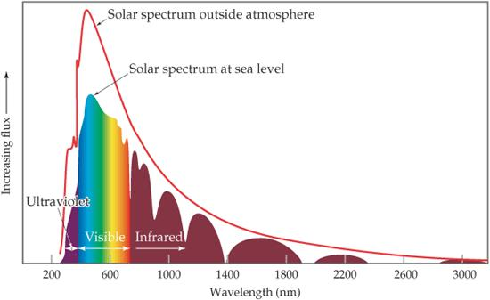
El rompimiento de un enlace químico por absorción de luz se llama fotodisociación, y el arranque de un electrón se llama fotoionización (Brown et al. 2012, sec. 18.1). El oxígeno diatómico se fotodisocia en la atmósfera superior, pues su enlace de 495 kJ/mol es mucho más débil que el triple enlace del nitrógeno, de 941 kJ/mol, y por eso O₂ es mucho más reactivo que N₂ en la atmósfera (Brown et al. 2012, sec. 18.1).
\[ \mathrm{O_2 + h\nu \longrightarrow 2\,O} \tag{26.1}\]
La fotodisociación del oxígeno expresada en la Ecuación Ecuación 26.1 requiere fotones con longitud de onda menor que 242 nm: la energía mínima es la energía de disociación de 495 kJ/mol, y aplicando la relación entre la energía por fotón y la longitud de onda se obtiene que la luz de 242 nm, en la región ultravioleta del espectro, tiene justo la energía necesaria para disociar una molécula de O₂ (Brown et al. 2012, sec. 18.1).
Como la energía del fotón aumenta cuando la longitud de onda disminuye, cualquier fotón de longitud de onda menor que 242 nm disocia también al O₂, mientras que el N₂, con su enlace de 941 kJ/mol, exige fotones de longitud de onda menor que 127 nm (Brown et al. 2012, sec. 18.1).
Afortunadamente el O₂ absorbe gran parte de la radiación de longitud de onda corta antes de que llegue a la atmósfera baja: la disociación es muy extensa a grandes altitudes, de modo que a 400 km solo el 1 % del oxígeno está como O₂ y el 99 % como oxígeno atómico, a 130 km ambas formas son casi igualmente abundantes y por debajo de 130 km predomina el O₂ porque la energía solar ya se absorbió en la atmósfera superior (Brown et al. 2012, sec. 18.1).
El N₂ no absorbe fotones fácilmente aunque tengan energía suficiente, y por eso se forma muy poco nitrógeno atómico en la atmósfera superior por fotodisociación (Brown et al. 2012, sec. 18.1). La absorción de la radiación de onda corta por el O₂ es, en cambio, la razón de que la fotorreactividad de la atmósfera media quede dominada por las especies del oxígeno (Brown et al. 2012, sec. 18.1).
Por encima de unos 90 km ocurren cuatro procesos importantes de fotoionización, documentados en la tabla correspondiente del texto, y los fotones de longitud de onda menor que los máximos indicados en ella tienen energía suficiente para arrancar electrones (Brown et al. 2012, sec. 18.1). Sin embargo, casi todos esos fotones de alta energía quedan filtrados por la atmósfera superior antes de alcanzar la superficie terrestre (Brown et al. 2012, sec. 18.1). La aurora boreal, fotografiada en el capítulo de Brown, resulta de la excitación de átomos y moléculas en las capas altas por partículas cargadas del Sol, y es una manifestación visible de esa química fotoinducida (Brown et al. 2012, fig. 18.2).
El ozono estratosférico: el escudo de la vida
Cuando la radiación del Sol llega a unos 90 km de altura, la mayor parte de la radiación capaz de ionizar ya se absorbió, pero la radiación capaz de disociar al O₂ sigue siendo suficientemente intensa hasta los 30 km (Brown et al. 2012, sec. 18.2). En la región entre 30 y 90 km la concentración de O₂ es mucho mayor que la de oxígeno atómico, de modo que los átomos de oxígeno formados por fotodisociación chocan con frecuencia contra moléculas de O₂ y forman ozono, O₃ {#sec-ozono-estratosferico}(Brown et al. 2012, sec. 18.2).
\[ \mathrm{O + O_2 + M \longrightarrow O_3^* + M} \tag{26.2}\]
La formación de ozono de la Ecuación Ecuación 26.2 libera 105 kJ/mol, y el asterisco indica que la molécula de O₃ contiene un exceso de energía que debe transferirse a la molécula M, cualquier especie presente, antes de que el ozono vuele en pedazos de nuevo hacia O₂ y oxígeno atómico (Brown et al. 2012, sec. 18.2). El ozono formado en la estratosfera absorbe fotones de longitudes de onda entre 240 y 310 nm, en la región ultravioleta, y protege así a la superficie, pues el O₂ y el N₂ no filtran esa banda de radiación (Brown et al. 2012, sec. 18.2).
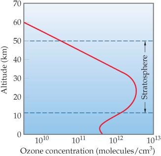
Los fotones de longitud de onda menor que unos 300 nm son lo bastante energéticos para romper muchos enlaces químicos sencillos, por lo que el «escudo de ozono» es esencial para el bienestar continuo de los seres vivos (Brown et al. 2012, sec. 18.2). Las moléculas que forman este escudo representan una fracción diminuta del oxígeno estratosférico, pues se destruyen continuamente incluso mientras se forman, y la capa de ozono designa precisamente esa banda de la estratosfera donde la concentración de O₃ alcanza su máximo (Brown et al. 2012, sec. 18.2). La curva de la Figura Figura 26.3 muestra ese perfil de concentración con su máximo estratosférico (Brown et al. 2012, fig. 18.4).
La absorción de radiación ultravioleta por el ozono explica también que la estratosfera sea más cálida que la mesosfera, pues la energía absorbida calienta el aire de esa capa (Brown et al. 2012, sec. 18.2). Esa misma absorción es la que mantiene fuera de la superficie la radiación más dañina para los organismos (Brown et al. 2012, sec. 18.2).
El ozono estratosférico se destruye en un ciclo natural: absorbe un fotón y se descompone en O₂ y oxígeno atómico, y el oxígeno atómico reacciona con otra molécula de ozono para dar dos moléculas de O₂ (Brown et al. 2012, sec. 18.2). En 1970 Crutzen demostró que los óxidos de nitrógeno naturales destruyen catalíticamente el ozono, y en 1974 Rowland y Molina reconocieron que el cloro de los clorofluorocarbonos, los CFC, podría agotar la capa de ozono, trabajo por el que los tres recibieron el Premio Nobel de Química en 1995 (Brown et al. 2012, sec. 18.2).
El agujero de ozono: los CFC y el Protocolo de Montreal
Los clorofluorocarbonos, principalmente CFCl₃ y CF₂Cl₂, no existen en la naturaleza y se usaron como propelentes de aerosoles, refrigerantes y agentes espumantes de plásticos (Brown et al. 2012, sec. 18.2). Son prácticamente no reactivos en la atmósfera baja y relativamente insolubles en agua, por lo que no se eliminan con la lluvia ni se disuelven en los océanos, y esa falta de reactividad que los hace útiles comercialmente les permite sobrevivir en la atmósfera y difundirse hacia la estratosfera (Brown et al. 2012, sec. 18.2).
Al difundirse a la estratosfera, los CFC quedan expuestos a radiación de alta energía que provoca su fotodisociación; como los enlaces C─Cl son considerablemente más débiles que los C─F, se forman átomos de cloro libre con luz de longitudes de onda entre 190 y 225 nm (Brown et al. 2012, sec. 18.2). Los cálculos sugieren que la formación de átomos de cloro es máxima a unos 30 km de altitud, justo donde la concentración de ozono es más alta (Brown et al. 2012, sec. 18.2).
\[ \mathrm{Cl + O_3 \longrightarrow ClO + O_2 \qquad ClO + O \longrightarrow Cl + O_2} \tag{26.3}\]
El cloro atómico reacciona rápidamente con el ozono para formar monóxido de cloro y O₂, y el ClO reacciona después con oxígeno atómico para regenerar el cloro, como muestra la Ecuación Ecuación 26.3, de modo que un solo átomo de cloro destruye miles de moléculas de ozono antes de convertirse en una forma inactiva (Brown et al. 2012, sec. 18.2). El monitoreo satelital desde 1978 reveló un agotamiento del ozono particularmente severo sobre la Antártida, fenómeno conocido como agujero de ozono, y el primer artículo científico sobre él apareció en 1985 (Brown et al. 2012, sec. 18.2).
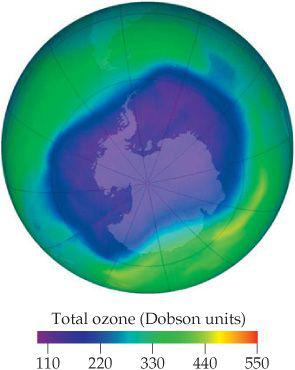
La concentración de ozono se mide con la unidad Dobson, que corresponde a 2,69 × 10¹⁶ moléculas de ozono en una columna de 1 cm² de atmósfera, y una capa de unos 300 unidades Dobson equivale a una columna de ozono puro de unos 3 mm de espesor si se comprimiera a presión superficial (Brown et al. 2012, sec. 18.2). El mapa de la Figura Figura 26.4 registra la columna de ozono del hemisferio sur en unidades así definidas (Brown et al. 2012, fig. 18.6).
También el bromo y el cloro de fuentes naturales, como el bromuro de metilo y el cloruro de metilo emitidos por los océanos, participan en reacciones de destrucción del ozono, pero se estima que contribuyen con menos de un tercio del cloro y bromo atmosféricos, mientras los dos tercios restantes provienen de actividades humanas (Brown et al. 2012, sec. 18.2).
El paso decisivo fue el Protocolo de Montreal de 1987, en el que las naciones participantes acordaron reducir la producción de CFC, y en 1992 representantes de unas cien naciones acordaron prohibir su producción y uso para 1996, con excepciones para usos esenciales (Brown et al. 2012, sec. 18.2).
Desde entonces la producción de CFC cayó abruptamente y el tamaño del agujero de ozono se estabilizó, pero como los CFC son no reactivos y se difunden lentamente hacia la estratosfera, los científicos estiman que el agotamiento del ozono continuará durante muchos años (Brown et al. 2012, sec. 18.2).
Los principales sustitutos son los hidrofluorocarbonos, los HFC, compuestos en los que los enlaces C─H reemplazan a los C─Cl, como el CH₂FCF₃, conocido como HFC-134a, que no contribuyen al agotamiento del ozono pero sí son potentes gases de efecto invernadero (Brown et al. 2012, sec. 18.2). Ese papel climático de los HFC se examina en la sección del efecto invernadero (Brown et al. 2012, sec. 18.2).
Compuestos de azufre y lluvia ácida
El dióxido de azufre, SO₂, es uno de los componentes traza más nocivos y prevalentes de la troposfera, y proviene sobre todo de la combustión de carbón que contiene azufre (Brown et al. 2012, sec. 18.2). El SO₂ se oxida en el aire para formar trióxido de azufre, SO₃, que al disolverse en agua forma ácido sulfúrico, y estos óxidos de azufre son los principales contribuyentes a la lluvia ácida(Brown et al. 2012, sec. 18.2).
La oxidación atmosférica del SO₂ comienza cuando el radical hidroxilo, OH, reacciona con él para formar la especie HOSO₂, que a su vez reacciona con O₂ para dar HO₂ y SO₃ (Brown et al. 2012, sec. 18.2; Chang y Overby 2022, 922). El SO₃ resultante se disuelve en las gotas de agua para dar ácido sulfúrico, el ingrediente central de la lluvia ácida (Brown et al. 2012, sec. 18.2).
\[ \mathrm{SO_3(g) + H_2O(l) \longrightarrow H_2SO_4(aq)} \tag{26.4}\]
El ácido sulfúrico formado según la Ecuación Ecuación 26.4 se ioniza en el agua de lluvia y baja el pH de la precipitación, y aunque la lluvia natural ya es algo ácida porque el CO₂ atmosférico forma ácido carbónico en las gotas, la lluvia contaminada por azufre alcanza valores de pH muy inferiores al del equilibrio natural (Brown et al. 2012, sec. 18.2).
El pH de la mayor parte de las aguas naturales con organismos vivos está entre 6,5 y 8,5, pero en muchas regiones de Estados Unidos los valores del agua dulce están muy por debajo de 6,5, y a pH menores que 4,0 se destruyen todos los vertebrados, la mayoría de los invertebrados y muchos microorganismos (Brown et al. 2012, sec. 18.2). El mapa de la Figura Figura 26.5 localiza las regiones de precipitación más ácida (Brown et al. 2012, fig. 18.7).
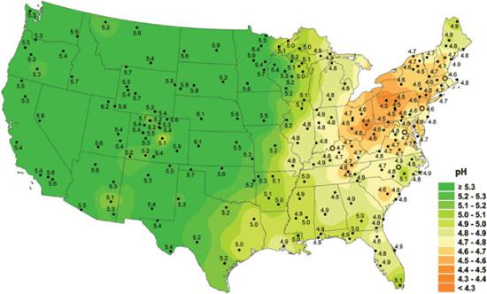
Los lagos más susceptibles al daño son los que tienen concentraciones bajas de iones básicos como el HCO₃⁻, que actuarían como amortiguador para minimizar los cambios de pH, y algunos de esos lagos se están recuperando conforme disminuyen las emisiones de azufre de la combustión de combustibles fósiles (Brown et al. 2012, sec. 18.2).
En parte por la Ley de Aire Limpio, las emisiones de SO₂ de las centrales eléctricas se redujeron más del 40 % desde 1980, y la lluvia ácida afecta también a los bosques y a las construcciones de piedra caliza y mármol, cuyo carbonato de calcio reacciona con el ácido sulfúrico para formar sulfato de calcio, dióxido de carbono y agua (Brown et al. 2012, sec. 18.2). El deterioro de esas construcciones por la reacción del carbonato se aprecia en la Figura Figura 26.6.
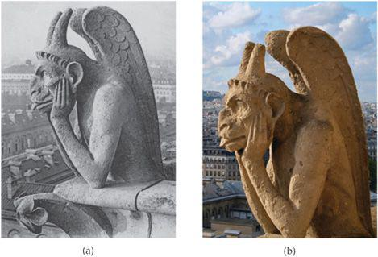
Una forma de prevenir la salida de SO₂ de las operaciones industriales consiste en hacerlo reaccionar con óxido de calcio, CaO, para formar sulfito de calcio, CaSO₃, en el proceso llamado desulfuración de gases de combustión (Brown et al. 2012, sec. 18.2). En el método habitual, los humos se hacen pasar por una suspensión acuosa de CaO que retiene las partículas sólidas de CaSO₃ y buena parte del SO₂ sin reaccionar, como muestra la Figura Figura 26.7. Aun así, la remoción no es completa, y las cantidades de carbón y petróleo quemadas en el mundo mantendrán la contaminación por SO₂ durante algún tiempo (Brown et al. 2012, sec. 18.2).
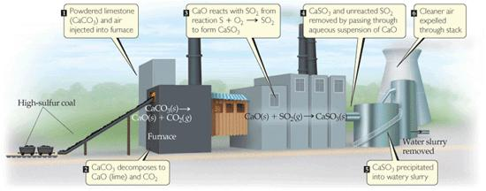
\[ \mathrm{CaO(s) + SO_2(g) \longrightarrow CaSO_3(s)} \tag{26.5}\]
El sulfito de calcio de la Ecuación Ecuación 26.5 puede oxidarse después con el oxígeno del aire para dar sulfato de calcio, yeso, un producto valioso para la industria de la construcción, de modo que la desulfuración convierte un contaminante gaseoso en un sólido aprovechable (Brown et al. 2012, sec. 18.2). El tratamiento de los lagos ácidos con cal aprovecha la misma química básica de los óxidos metálicos: el óxido de calcio reacciona con el agua para dar hidróxido de calcio, que neutraliza el exceso de iones hidrógeno, y los costos de este tratamiento son bajos en comparación con los daños evitados (Brown et al. 2012, sec. 18.2).
Óxidos de nitrógeno y smog fotoquímico
Los motores de combustión interna generan óxido nítrico, NO, porque la alta temperatura del motor proporciona energía suficiente para romper el triple enlace del N₂ y hacerlo reaccionar con el O₂ (Brown et al. 2012, sec. 18.2). El NO reacciona después con el oxígeno del aire para formar NO₂, un gas tóxico de color marrón amarillento que irrita los ojos y las vías respiratorias, y la fotodisociación del NO₂ inicia las reacciones asociadas al smog fotoquímico: la disociación requiere 304 kJ/mol, lo que corresponde a una longitud de onda de 393 nm, de modo que en la luz solar el NO₂ se disocia a NO y oxígeno atómico (Brown et al. 2012, sec. 18.2).
\[ \mathrm{NO_2 + h\nu \longrightarrow NO + O} \tag{26.6}\]
El oxígeno atómico liberado en la Ecuación Ecuación 26.6 reacciona con el O₂ para formar ozono, y este ozono troposférico es un contaminante dañino que irrita los pulmones y daña la vegetación, en contraste con el ozono estratosférico que protege de la radiación ultravioleta (Brown et al. 2012, sec. 18.2). El ozono y otras especies reactivas del smog reaccionan con los hidrocarburos no quemados de los escapes para producir compuestos como los aldehídos y los nitratos de peroxiacilo, responsables de la neblina parda que cubre las ciudades con smog (Brown et al. 2012, sec. 18.2).
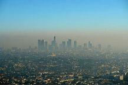
El ciclo diario del smog comienza en las horas pico de la mañana, cuando el tráfico emite NO y hidrocarburos, y durante la mañana el NO se oxida a NO₂; cuando la luz solar se intensifica, la fotodisociación del NO₂ genera ozono que alcanza su máximo a media tarde, y por la noche el ozono disminuye al reaccionar con el NO para regenerar NO₂ (Brown et al. 2012, sec. 18.2).
El ozono troposférico es pues un contaminante fotoquímico producido por la actividad humana, y su presencia en la capa baja no debe confundirse con el escudo estratosférico, aunque químicamente sea la misma molécula (Brown et al. 2012, sec. 18.2). La neblina parda que resulta de estas reacciones es la vista familiar de la Figura Figura 26.8 sobre las ciudades (Brown et al. 2012, fig. 18.10).
Los óxidos de nitrógeno contribuyen además a la lluvia ácida: el NO₂ se disuelve en el agua de las gotas y forma ácido nítrico, HNO₃, junto con NO, cerrando el ciclo de los óxidos de nitrógeno entre la atmósfera y la superficie (Brown et al. 2012, sec. 18.2). La química del nitrógeno atmosférico ilustra así el principio general de los óxidos ácidos (?sec-oxidos-acidos) de los no metales estudiado en el capítulo correspondiente: los óxidos de azufre y nitrógeno se hidrolizan para formar ácidos fuertes que acidifican la precipitación (Brown et al. 2012, sec. 18.2).
El efecto invernadero y el cambio climático
La Tierra está en equilibrio térmico global con su entorno: el planeta radia energía al espacio a una velocidad igual a la velocidad con que absorbe energía del Sol (Brown et al. 2012, sec. 18.2). La superficie terrestre emite radiación infrarroja, y el vapor de agua y el dióxido de carbono atmosféricos absorben parte de esa radiación saliente, manteniendo una temperatura uniforme y habitable al retener, por así decirlo, la radiación infrarroja que sentimos como calor (Brown et al. 2012, sec. 18.2).
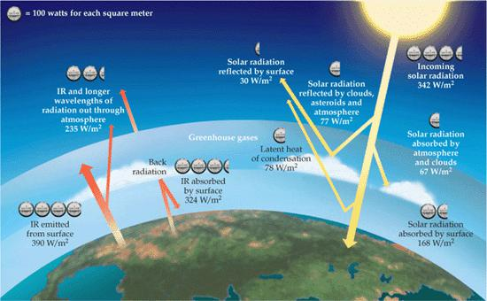
La influencia del H₂O, el CO₂ y ciertos otros gases atmosféricos sobre la temperatura terrestre se llama efecto invernadero, porque al atrapar la radiación infrarroja estos gases actúan como el vidrio de un invernadero, y los gases mismos se llaman gases de efecto invernadero(Brown et al. 2012, sec. 18.2). La Figura Figura 26.9 resume las corrientes de radiación que mantienen ese balance (Brown et al. 2012, fig. 18.11).
El vapor de agua hace la mayor contribución: su presión parcial varía mucho con el lugar y el tiempo, pero es máxima cerca de la superficie y desempeña el papel principal en mantener la temperatura nocturna, pues en los climas desérticos muy secos puede hacer mucho calor de día y mucho frío de noche (Brown et al. 2012, sec. 18.2). Ese contraste muestra la estrecha relación entre el vapor de agua y el clima local (Brown et al. 2012, sec. 18.2).
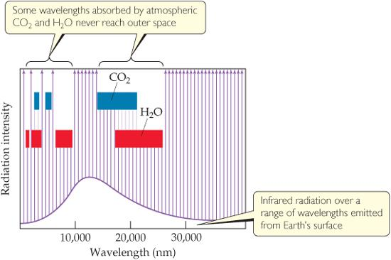
El CO₂ recibe la mayor atención, pero otros gases contribuyen al efecto invernadero: el metano, CH₄, los hidrofluorocarbonos y los clorofluorocarbonos (Brown et al. 2012, sec. 18.2). Cada molécula de metano tiene unas 25 veces el efecto invernadero de una molécula de CO₂, y los estudios del aire atrapado en los hielos de Groenlandia y la Antártida muestran que la concentración atmosférica de metano aumentó desde valores preindustriales de 0,3 a 0,7 ppm hasta el valor actual de unos 1,8 ppm (Brown et al. 2012, sec. 18.2). La Figura Figura 26.10 muestra las porciones de la radiación infrarroja saliente que absorben el CO₂ y el H₂O (Brown et al. 2012, fig. 18.12).
El análisis del aire atrapado en núcleos de hielo de la Antártida y Groenlandia permite determinar los niveles de CO₂ de los últimos 160 000 años: el nivel permaneció bastante constante desde la última Edad de Hielo, hace unos 10 000 años, hasta el comienzo de la Revolución Industrial, hace unos 300 años, y desde entonces la concentración aumentó alrededor del 30 % hasta el máximo actual de unos 386 ppm (Brown et al. 2012, sec. 18.2).
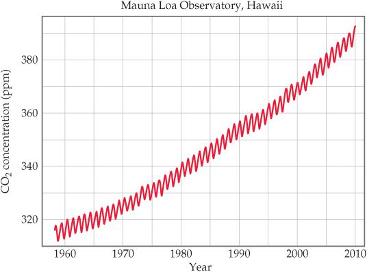
Un consenso emergente entre los científicos sostiene que este aumento del CO₂ está perturbando el clima de la Tierra y puede ser responsable del aumento observado de 0,3 °C a 0,6 °C en la temperatura global media durante el último siglo (Brown et al. 2012, sec. 18.2). Los científicos usan el término cambio climático en lugar de «calentamiento global» porque al subir la temperatura se afectan los vientos y las corrientes oceánicas de maneras que pueden enfriar unas zonas y calentar otras (Brown et al. 2012, sec. 18.2). La curva de la Figura Figura 26.11 muestra ese ascenso desde la Revolución Industrial (Brown et al. 2012, fig. 18.13).
La concentración total de HFC sigue siendo pequeña, unos 40 partes por billón, pero crece alrededor del 10 % anual, por lo que estos sustitutos de los CFC se vuelven contribuyentes cada vez más importantes al efecto invernadero (Brown et al. 2012, sec. 18.2). Estos compuestos, como el HFC-134a citado en la sección del agujero de ozono, fueron introducidos precisamente para reemplazar a los CFC (Brown et al. 2012, sec. 18.2).
El metano, con una vida media atmosférica de unos 10 años, es mucho más corto que la del CO₂, pero se oxida en la estratosfera produciendo vapor de agua, un potente gas de efecto invernadero, y en la troposfera reacciona con radicales OH y óxidos de nitrógeno para producir otros gases de efecto invernadero, de modo que se estima que los efectos climáticos del CH₄ superan la mitad de los del CO₂ (Brown et al. 2012, sec. 18.2).
Las bacterias anaeróbicas de pantanos, vertederos, arrozales y el sistema digestivo de los rumiantes producen metano, y cerca de dos tercios de las emisiones actuales, que crecen alrededor del 1 % anual, se relacionan con actividades humanas (Brown et al. 2012, sec. 18.2). Pese a su vida media atmosférica corta, apenas una década frente a la centenaria del dióxido de carbono, ese metano biogénico es un eslabón relevante del ciclo del carbono que la Figura Figura 26.11 documenta para el CO₂ (Brown et al. 2012, sec. 18.2).
El presupuesto del dióxido de carbono ilustra la complejidad del sistema: la deforestación añade unos 1600 millones de toneladas métricas anuales, la quema de combustibles fósiles unos 5500 millones, la atmósfera retiene unos 3300 millones, los océanos absorben unos 2000 millones y quedan unos 1800 millones de toneladas anuales sin contabilizar, que se atribuyen a la captura por la vegetación terrestre (Brown et al. 2012, sec. 18.1–18.3).
El océano absorbe además gran parte del CO₂: con el agua forma ácido carbónico, y la mayor parte del carbono oceánico está como HCO₃⁻ y CO₃²⁻, un sistema amortiguador que mantiene el pH del océano entre 8,0 y 8,3, aunque se predice que el pH disminuirá conforme aumente la concentración atmosférica de CO₂ (Brown et al. 2012, sec. 18.3).
El agua de la Tierra: ciclo global y océano mundial
Toda el agua de la Tierra está conectada en un ciclo global del agua, en el que la mayor parte de los procesos depende de los cambios de fase: el agua líquida de los océanos se evapora por el calor del Sol, el vapor se condensa en gotas que vemos como nubes, las gotas pueden cristalizar en hielo y precipitar como granizo o nieve, y el hielo del suelo se funde en agua líquida que se filtra, o puede sublimar directamente a vapor {#sec-ciclo-agua}(Brown et al. 2012, sec. 18.3). La Figura Figura 26.12 resume las transiciones de fase que conectan los reservorios líquido, gaseoso y sólido del ciclo (Brown et al. 2012, fig. 18.15).
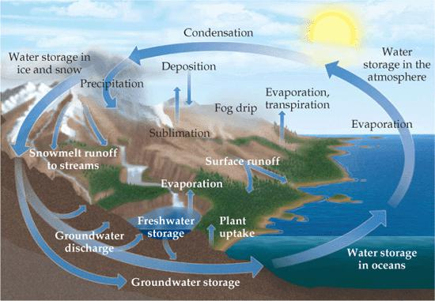
La vasta capa de agua salada que cubre gran parte del planeta es en realidad un solo cuerpo conectado y de composición casi constante, por lo que los oceanógrafos hablan de un océano mundial en lugar de los océanos separados de los libros de geografía (Brown et al. 2012, sec. 18.3). La idea de un océano único conectado es la base para seguir los transportes de calor y de sales que se estudian a continuación (Brown et al. 2012, sec. 18.3).
El océano mundial es enorme: tiene un volumen de 1,35 × 10⁹ km³ y contiene el 97,2 % de toda el agua de la Tierra; del 2,8 % restante, el 2,1 % está en casquetes y glaciares, y toda el agua dulce de lagos, ríos y suelo suma apenas un 0,6 %, mientras la mayor parte del 0,1 % final está en aguas salobres como las del Gran Lago Salado (Brown et al. 2012, sec. 18.3).
La salinidad del agua de mar es la masa en gramos de sales secas presentes en 1 kg de agua de mar, y en el océano mundial promedia unos 35, es decir, el agua de mar contiene alrededor del 3,5 % de sales disueltas en masa (Brown et al. 2012, sec. 18.3). La lista de elementos del agua de mar es muy larga, pero la mayoría está en concentraciones muy bajas, y la tabla correspondiente del texto de Brown recoge los once iones más abundantes, encabezados por el cloruro y el sodio, seguidos por sulfato, magnesio, calcio y potasio (Brown et al. 2012, sec. 18.3).
La temperatura, la salinidad y la densidad del agua de mar varían con la profundidad: la luz del sol penetra bien solo unos 200 m, entre 200 y 1000 m está la «zona crepuscular» donde la luz visible es tenue, y por debajo de 1000 m el océano está negro y frío, a unos 4 °C, de modo que la vida marina se concentra en las capas iluminadas (Brown et al. 2012, sec. 18.3).
El transporte de calor, sal y otros químicos por el océano influye en las corrientes y el clima global, y aunque el mar es tan vasto que una concentración de 1 parte por billón, unos 10⁻⁶ g por kilogramo de agua, supone 1 × 10¹² kg de esa sustancia en el océano mundial, por los altos costos de extracción solo tres sustancias se obtienen del mar en cantidades comercialmente importantes: cloruro de sodio, bromo y magnesio (Brown et al. 2012, sec. 18.3).
Agua dulce, agua subterránea y acuíferos
El agua dulce se forma por evaporación de los océanos y la tierra, el vapor se transporta por la circulación atmosférica global y regresa a la Tierra como lluvia, nieve y otras formas de precipitación (Brown et al. 2012, sec. 18.3). Al escurrir hacia los océanos, el agua disuelve cationes, principalmente Na⁺, K⁺, Mg²⁺, Ca²⁺ y Fe²⁺; aniones, principalmente Cl⁻, SO₄²⁻ y HCO₃⁻, y gases, principalmente O₂, N₂ y CO₂, y al usarla se carga de materiales disueltos adicionales, incluidos los desechos de la sociedad humana (Brown et al. 2012, sec. 18.3).
Aproximadamente el 20 % del agua dulce mundial está bajo el suelo, en forma de agua subterránea, que reside en los acuíferos, capas de roca porosa que retienen agua (Brown et al. 2012, sec. 18.3). El agua de los acuíferos puede ser muy pura y accesible si está cerca de la superficie, mientras la roca densa que no deja penetrar el agua puede retenerla durante años o incluso milenios, y el acuífero de Ogallala, el mayor de Estados Unidos, cubre 450 000 km² en ocho estados y proporciona el 82 % del agua potable de esa región (Brown et al. 2012, sec. 18.3).
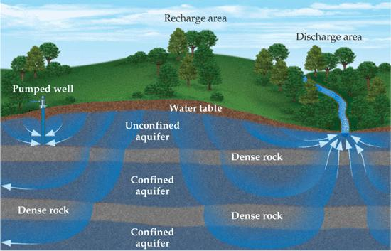
La naturaleza de la roca que contiene el agua subterránea influye mucho en su composición química, pues si los minerales son algo solubles, los iones se lixivian de la roca y quedan disueltos, como ocurre con el arsénico en forma de HAsO₄²⁻, H₂AsO₄⁻ y H₃AsO₃, hallado en aguas subterráneas de todo el mundo y de forma infame en Bangladés, en concentraciones venenosas para el ser humano (Brown et al. 2012, sec. 18.3).
Los acuíferos se descargan a través de pozos y ríos y se recargan desde el agua que fluye por el suelo, como la lluvia, y el tiempo que tarda el agua en migrar de un acuífero profundo a la superficie depende del espesor y la porosidad de las capas (Brown et al. 2012, sec. 18.3). La Figura Figura 26.13 distingue los acuíferos confinados por roca densa, que retienen agua durante siglos o milenios, de los no confinados, que se filtran en días o años (Brown et al. 2012, fig. 18.17).
La cantidad de O₂ disuelto en el agua es un indicador importante de su calidad: el agua saturada de aire a 1 atm y 20 °C contiene unos 9 ppm de O₂, y los peces de aguas frías requieren al menos 5 ppm de oxígeno disuelto para sobrevivir (Brown et al. 2012, sec. 18.4). Las bacterias aeróbicas consumen oxígeno disuelto para oxidar la materia orgánica y obtener energía, y la materia orgánica que las bacterias pueden oxidar se dice biodegradable; los desechos cuyo consumo de oxígeno agota el agua se llaman desechos que demandan oxígeno, y su presencia excesiva puede matar a los peces y producir olores ofensivos (Brown et al. 2012, sec. 18.4).
En presencia de oxígeno, el carbono, hidrógeno, nitrógeno, azufre y fósforo de la materia biodegradable terminan sobre todo como CO₂, HCO₃⁻, H₂O, NO₃⁻, SO₄²⁻ y fosfatos, pero la formación de estos productos de oxidación puede reducir el oxígeno disuelto hasta el punto de que las bacterias aeróbicas ya no sobreviven (Brown et al. 2012, sec. 18.4). Las bacterias anaeróbicas toman entonces el relevo de la descomposición y forman CH₄, NH₃, H₂S, PH₃ y otros productos, varios de los cuales contribuyen a los olores ofensivos de algunas aguas contaminadas (Brown et al. 2012, sec. 18.4).
Los nutrientes vegetales, en particular el nitrógeno y el fósforo, contribuyen a la contaminación del agua al estimular el crecimiento excesivo de plantas acuáticas, cuyos resultados más visibles son las algas flotantes y el agua turbia (Brown et al. 2012, sec. 18.4). Ese crecimiento descontrolado multiplica la materia vegetal que muere y se descompone, y la descomposición consume el oxígeno disuelto, de modo que un exceso de nutrientes termina empobreciendo el agua que fertilizó (Brown et al. 2012, sec. 18.4).
Lo más significativo es que al crecer las plantas en exceso aumenta la materia vegetal muerta y en descomposición, un proceso llamado eutrofización, y la descomposición consume O₂, de modo que sin oxígeno suficiente el agua no puede sostener la vida animal (Brown et al. 2012, sec. 18.4). La Figura Figura 26.14 muestra el resultado visible de ese proceso (Brown et al. 2012, fig. 18.18).
La desalinización y el tratamiento del agua
Por su alto contenido de sal, el agua de mar no es apta para el consumo humano ni para la mayoría de los usos del agua: en Estados Unidos el contenido de sal de los suministros municipales se limita por códigos sanitarios a no más del 0,05 % en masa, mucho menos que el 3,5 % del agua de mar y que el 0,5 % aproximado del agua salobre subterránea (Brown et al. 2012, sec. 18.4). La desalinización es la eliminación de las sales disueltas del agua de mar o del agua salobre para hacerla utilizable, y puede lograrse por destilación o por ósmosis inversa (Brown et al. 2012, sec. 18.4).
La destilación separa el agua de las sales porque el agua es volátil y las sales no lo son, pero a gran escala presenta muchos problemas: al destilar el agua de mar, las sales se concentran cada vez más y terminan precipitando, y el proceso consume mucha energía (Brown et al. 2012, sec. 18.4). La ósmosis inversa, en cambio, aplica presión externa suficiente para invertir la ósmosis, de modo que el disolvente pasa de la disolución más concentrada a la más diluida a través de una membrana semipermeable (Brown et al. 2012, sec. 18.4).
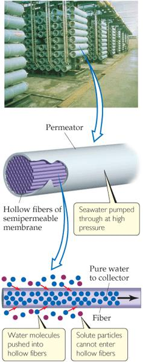
En una instalación moderna de ósmosis inversa se usan fibras huecas como membrana semipermeable: el agua entra a presión en las fibras y se recupera el agua desalinizada (Brown et al. 2012, sec. 18.4). La mayor planta desalinizadora del mundo, en Jubail, Arabia Saudita, proporciona el 50 % del agua potable de ese país con ósmosis inversa sobre agua del Golfo Pérsico, y la mayor de Estados Unidos, cerca de Tampa Bay, Florida, produce 35 millones de galones de agua potable al día desde 2007 (Brown et al. 2012, sec. 18.4).
También existen desalinizadores portátiles accionados a mano, usados en campamentos, viajes y en el mar, y el esquema de la Figura Figura 26.15 muestra en todos estos casos el mismo principio de fibras huecas que dejan pasar el agua bajo presión [Brown et al. (2012), sec. 18.4; fig. 18.19].
El agua de las fuentes dulces suele requerir tratamiento antes de su uso doméstico: los pasos generales del tratamiento municipal incluyen filtración gruesa, sedimentación, filtración con arena, aireación, esterilización y, a veces, ablandamiento del agua (Brown et al. 2012, sec. 18.4). La Figura Figura 26.16 reproduce el esquema de una planta típica, en el que el agua cruda atraviesa cada etapa antes de entrar en la red de distribución, y la esterilización final con un agente químico se examina a continuación [Brown et al. (2012), fig. 18.20; sec. 18.4].
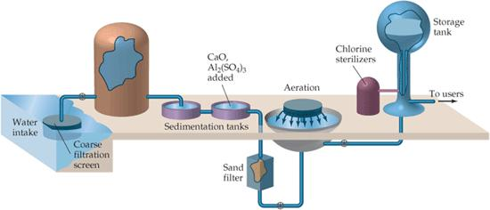
El paso final consiste normalmente en tratar el agua con un agente químico para asegurar la destrucción de las bacterias: el ozono es más eficaz, pero el cloro es más barato, y el Cl₂ licuado se dispensa desde tanques a través de un dispositivo dosificador directamente al suministro (Brown et al. 2012, sec. 18.4).
\[ \mathrm{Cl_2 + H_2O \rightleftharpoons HClO + HCl} \tag{26.7}\]
La acción esterilizante del cloro probablemente no se debe al Cl₂ mismo sino al ácido hipocloroso, HClO, que se forma cuando el cloro reacciona con el agua según la Ecuación Ecuación 26.7, un equilibrio estudiado en el capítulo de ácidos y bases (Brown et al. 2012, sec. 18.4). La cantidad de cloro usada depende de la presencia de otras sustancias con las que pueda reaccionar y de las concentraciones de bacterias y virus a eliminar (Brown et al. 2012, sec. 18.4).
En 1974 científicos de Europa y Estados Unidos descubrieron que la cloración del agua produce un grupo de subproductos antes no detectados, los trihalometanos, los THM, llamados así porque todos tienen un carbono y tres halógenos: CHCl₃, CHCl₂Br, CHClBr₂ y CHBr₃ (Brown et al. 2012, sec. 18.4). El problema apareció cuando los métodos analíticos pudieron detectar estos compuestos en el agua de red (Brown et al. 2012, sec. 18.4).
Estos y otros compuestos orgánicos clorados y bromados se forman por la reacción del cloro disuelto con la materia orgánica presente en casi todas las aguas naturales, y algunos THM son carcinógenos sospechosos, por lo que la Organización Mundial de la Salud y la Agencia de Protección Ambiental de Estados Unidos han fijado límites de 80 µg/L, unos 80 ppb, para la cantidad total de THM en el agua potable (Brown et al. 2012, sec. 18.4).
Las alternativas al cloro, como el ozono o el dióxido de cloro, producen menos sustancias halogenadas pero tienen sus propios inconvenientes, como la oxidación del bromuro disuelto; cuando los THM ya se formaron, su concentración puede reducirse por aireación, pues son más volátiles que el agua, o por adsorción sobre carbón activado (Brown et al. 2012, sec. 18.4).
No existen alternativas totalmente satisfactorias a la cloración o la ozonización, y se enfrenta una consideración de beneficio frente a riesgo: los riesgos de cáncer por los THM son muy bajos frente a los riesgos de cólera, tifus y trastornos gastrointestinales del agua sin tratar (Brown et al. 2012, sec. 18.4).
Un desarrollo prometedor es el dispositivo llamado LifeStraw, que purifica el agua mientras se bebe (Brown et al. 2012, sec. 18.4). Al succionar, el agua encuentra primero un filtro textil de malla de 100 µm y luego otro de 15 µm, que eliminan desechos y grupos de bacterias (Brown et al. 2012, sec. 18.4).
Después el agua pasa por una cámara de perlas impregnadas de yodo, donde se matan bacterias, virus y parásitos, y finalmente por carbón activado granulado, que elimina el olor del yodo y los parásitos que no retuvieron los filtros (Brown et al. 2012, sec. 18.4). El esquema de la Figura Figura 26.17 sigue ese recorrido en tres etapas (Brown et al. 2012, fig. 18.21).
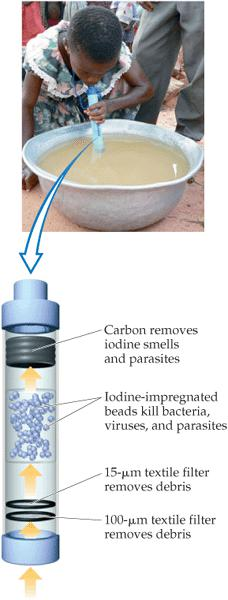
El agua que contiene una concentración relativamente alta de Ca²⁺, Mg²⁺ y otros cationes divalentes se llama agua dura, y aunque estos iones no son generalmente una amenaza para la salud, pueden hacer el agua inadecuada para algunos usos domésticos e industriales, pues reaccionan con el jabón para formar una espuma insoluble, la sustancia de los anillos de la bañera (Brown et al. 2012, sec. 18.4). Al calentarse o evaporarse, el agua dura deposita además carbonato de calcio y otras sales insolubles que forman sarro en tuberías y calentadores, como muestra la tubería recubierta de la Figura Figura 26.18 [Brown et al. (2012), sec. 18.4; fig. 18.22].
La eliminación de los iones que causan la dureza se llama ablandamiento del agua, y en el proceso cal-sosa, usado a gran escala municipal, el agua se trata con hidróxido de calcio y carbonato de sodio para precipitar el Ca²⁺ como CaCO₃ y el Mg²⁺ como Mg(OH)₂ (Brown et al. 2012, sec. 18.4).
En el intercambio iónico, método doméstico típico, el agua dura pasa por una resina de perlas de plástico con grupos aniónicos unidos covalentemente, como ─COO⁻ o ─SO₃⁻, que tienen iones Na⁺ para balancear sus cargas; los cationes Ca²⁺ del agua dura son atraídos por los grupos aniónicos y desplazan al Na⁺, de modo que entran dos Na⁺ al agua por cada Ca²⁺ retirado para mantener el balance de carga (Brown et al. 2012, sec. 18.4).
La química verde: prevención, economía atómica y diseño sostenible
El planeta en que vivimos es, en gran medida, un sistema cerrado que intercambia energía pero no materia con su entorno, y para que la humanidad prospere todos los procesos deberían estar en equilibrio con los procesos naturales y los recursos físicos de la Tierra (Brown et al. 2012, sec. 18.5). La química verde es una iniciativa internacional que promueve el diseño y la aplicación de productos y procesos químicos compatibles con la salud humana y que preservan el ambiente, y sus fundadores desarrollaron un conjunto de doce principios para guiar este trabajo (Brown et al. 2012, sec. 18.5).
Atkins comparte esta visión desde la historia: las fábricas de Perkin tiñeron los canales cercanos de rojo, verde y amarillo según las prioridades de fabricación del día, y el análisis de núcleos de hielo de las eras griega y romana muestra rastros de la metalurgia antigua, de modo que los brotes verdes de la contaminación ambiental pueden rastrearse hasta los griegos y los romanos (Atkins 2015, cap. 6).
El primer principio, la prevención, sostiene que es mejor prevenir la generación de residuos que limpiarlos después de que se hayan creado, y Atkins enfatiza la distinción entre el camino legal y el camino químico: el legal constriñe por la perspectiva del castigo, mientras el químico evita el problema por su eliminación en el origen, y este último, siempre el mejor modo de acción, depende de los desarrollos de la propia química (Brown et al. 2012, sec. 18.5; Atkins 2015, cap. 6).
La implicación fundamental del principio de prevención es que los materiales de partida de un proceso deberían aparecer, en la mayor medida posible, íntegros en el producto final: los átomos que entran deberían aparecer todos en las moléculas del producto, con la menor cantidad posible descartada como no deseada (Atkins 2015, cap. 6).
El segundo principio, la economía atómica, pide que los métodos para fabricar compuestos se diseñen para maximizar la incorporación de todos los átomos de partida en el producto final (Brown et al. 2012, sec. 18.5). Esta noción tiene impactos económicos y tecnológicos considerables y, por lo tanto, una reticencia comercial, pues los procesos y las plantas deben diseñarse en consecuencia y las materias primas específicas deben adquirirse de fuentes inconvenientes, posiblemente a gran costo (Atkins 2015, cap. 6).
Un ejemplo es la fabricación del estireno, cuya demanda mundial supera los 25 millones de toneladas métricas anuales: el proceso tradicional de dos pasos parte de benceno y etileno, ambos caros y uno carcinógeno conocido, mientras un proceso reciente de un solo paso hace reaccionar tolueno con metanol a 425 °C sobre un catalizador especial, con materias primas más baratas, menor consumo de energía y subproductos aprovechables (Brown et al. 2012, sec. 18.5).
El tercer principio pide que, cuando sea práctico, los métodos sintéticos se diseñen para usar y generar sustancias con poca o ninguna toxicidad para la salud humana y el ambiente, y el cuarto exige diseñar productos químicos que minimicen la toxicidad manteniendo su función deseada (Brown et al. 2012, sec. 18.5). Estos dos principios atacan la toxicidad en el origen, tanto de los reactivos como de los productos (Brown et al. 2012, sec. 18.5).
El quinto principio pide eliminar en lo posible el uso de sustancias auxiliares, como los disolventes y los agentes de separación, y si se usan, que sean lo más inocuos posible, y Atkins subraya que los líquidos usados como disolventes pueden liberarse al ambiente, aunque sea en pequeñas cantidades, cuando aparecen fugas en los procedimientos de reciclado, por lo que la búsqueda de disolventes benignos es esencial incluso para los procedimientos de laboratorio más pequeños (Brown et al. 2012, sec. 18.5; Atkins 2015, cap. 6).
El sexto principio exige reconocer los impactos ambientales y económicos de la energía de los procesos y minimizarlos, realizando las reacciones a temperatura y presión ambiente siempre que sea posible, y Atkins añade que todas las exigencias de energía hacen demandas al ambiente, ya sea por el combustible requerido o por el impacto de los gases de escape en la atmósfera (Brown et al. 2012, sec. 18.5; Atkins 2015, cap. 6).
El séptimo principio pide que la materia prima, el alimento del proceso, sea renovable siempre que sea técnica y económicamente práctico, y Atkins recuerda que la naturaleza proporciona cosechas cada año, renovables gracias a la benevolencia del Sol y su impulso del reciclaje del dióxido de carbono mediante la fotosíntesis (Brown et al. 2012, sec. 18.5; Atkins 2015, cap. 6).
El octavo principio pide minimizar o evitar la derivatización innecesaria, la formación de compuestos intermedios y las modificaciones temporales, porque esos pasos requieren reactivos adicionales y pueden generar residuos; y el noveno pide preferir los reactivos catalíticos, lo más selectivos posible, que mejoran el rendimiento en un tiempo dado con menor costo energético que los procesos no catalíticos (Brown et al. 2012, sec. 18.5).
La fabricación de estireno en un solo paso ilustra el papel de la catálisis: encontrar el catalizador adecuado suele ser la clave para descubrir un proceso nuevo, y el hidrógeno formado en la reacción puede reciclarse como fuente de energía (Brown et al. 2012, sec. 18.5). El ejemplo confirma además el octavo principio, pues elimina un paso intermedio de la ruta tradicional (Brown et al. 2012, sec. 18.5).
El décimo principio exige que los productos químicos se diseñen para que, al final de su función, se descompongan en productos de degradación inocuos y no persistan en el ambiente, y Atkins extiende la mirada al ciclo de vida completo del producto: los químicos más brillantes miran más allá del proceso mismo hacia la vida entera del producto, para asegurar que al final de su vida funcional el producto y aquello en lo que se degrade no sean tóxicos ni se degraden en el ambiente en restos tóxicos (Brown et al. 2012, sec. 18.5; Atkins 2015, cap. 6).
La consideración del ciclo de vida incluye la anticipación del desastre durante el propio proceso de fabricación, recordando Bhopal, con la implicación precautoria de que todo lo producido o almacenado debería tener un efecto mínimo en el ambiente en caso de accidente, lo que exige un análisis continuo y confiable de todos los componentes de los recipientes de reacción y almacenamiento (Atkins 2015, cap. 6).
El undécimo principio pide métodos analíticos en tiempo real para el monitoreo y control del proceso antes de que se formen sustancias peligrosas, y el duodécimo pide elegir reactivos y disolventes que minimicen el potencial de accidentes químicos, incluidas liberaciones, explosiones e incendios (Brown et al. 2012, sec. 18.5).
La economía atómica se ilustra también con la hidroquinona, un intermediario común para fabricar polímeros: la ruta industrial estándar producía muchos subproductos tratados como residuos, mientras el nuevo proceso usa un material de partida distinto y aísla dos de los subproductos de la nueva reacción para fabricar el propio material de partida (Brown et al. 2012, sec. 18.5).
Otro ejemplo es la reacción a temperatura ambiente, en presencia de un catalizador de cobre(I), entre una azida orgánica y un alquino, que forma una sola molécula de producto con el 100 % de los átomos de partida, el caso extremo de la economía atómica (Brown et al. 2012, sec. 18.5). Ningún proceso con subproductos puede alcanzar ese límite teórico de incorporación total (Brown et al. 2012, sec. 18.5).
El uso de fluidos supercríticos representa una forma de reemplazar los disolventes convencionales: un fluido supercrítico es un estado inusual de la materia con propiedades de gas y de líquido a la vez, y el agua y el dióxido de carbono son los dos disolventes supercríticos más populares (Brown et al. 2012, sec. 18.5).
Un proceso industrial reciente reemplaza los disolventes clorofluorocarbonados por CO₂ líquido o supercrítico en la producción del politetrafluoroetileno, el Teflón, y aunque el CO₂ es un gas de efecto invernadero, no hay necesidad de fabricar CO₂ nuevo para usarlo como disolvente supercrítico, pues se aprovecha el que ya existe (Brown et al. 2012, sec. 18.5).
Esta aparente paradoja, señalar al CO₂ como causante del cambio climático y a la vez recomendarlo como disolvente verde, se resuelve así: el problema climático nace de emitir CO₂ nuevo a la atmósfera por la combustión, mientras el uso supercrítico recicla CO₂ ya producido y evita los disolventes orgánicos volátiles tóxicos (Brown et al. 2012, sec. 18.5).
Del mismo modo, en la oxidación del para-xileno a ácido tereftálico, base del plástico PET y de la fibra de poliéster, el proceso comercial usa ácido acético como disolvente con presurización y temperatura alta, y una ruta alternativa emplea agua supercrítica como disolvente y peróxido de hidrógeno como oxidante, con la ventaja de eliminar el ácido acético (Brown et al. 2012, sec. 18.5).
Atkins ofrece un contraste dialéctico con Brown en el énfasis, no en la sustancia: Brown presenta la química verde como una iniciativa formal con doce principios y ejemplos industriales cuantificados, mientras Atkins la presenta como un movimiento histórico y moral que distingue el camino legal del químico y sostiene que la química es la única solución a los problemas que ella misma causa en el ambiente, en la tierra, el aire o el agua (Brown et al. 2012, sec. 18.5; Atkins 2015, cap. 6).
Ambas posturas coinciden en que la prevención en el origen supera a la limpieza del residuo, y la diferencia de tono proviene del género: el manual sistemático de Brown organiza el campo en principios, mientras el ensayo breve de Atkins argumenta la necesidad histórica de la química verde y su tensión con el beneficio comercial (Atkins 2015, cap. 6).
Atkins concluye que siempre hay una tensión entre el beneficio comercial y la responsabilidad social y ambiental, tensión que no se ve ayudada por los bajos niveles de supervisión en algunos ambientes, y que la caja de Pandora de la química, con su capacidad de moldear los átomos, exige responsabilidades que bajo presión social están ahora altas en la conciencia de la industria química (Atkins 2015, cap. 6).
Ejemplo resuelto
Este ejemplo integra la relación entre energía de enlace y longitud de onda de un fotón, herramienta del capítulo de estructura electrónica, con la fotoquímica atmosférica recién estudiada: el enlace carbono-bromo del bromometano tiene una energía de disociación típica de 210 kJ/mol, y se desea saber cuál es la longitud de onda máxima de los fotones que pueden romper ese enlace y en qué región del espectro electromagnético se encuentra (Brown et al. 2012, sec. 18.1).
La energía por mol de fotones se relaciona con la longitud de onda mediante E = hcNₐ/λ, donde h es la constante de Planck, c la velocidad de la luz y Nₐ el número de Avogadro, y la longitud de onda máxima corresponde al fotón de mínima energía que aún tiene la energía de disociación (Brown et al. 2012, sec. 18.1).
Despejando la longitud de onda se obtiene λ = hcNₐ/E, y sustituyendo los valores h = 6,626 × 10⁻³⁴ J·s, c = 3,00 × 10⁸ m/s, Nₐ = 6,022 × 10²³ mol⁻¹ y E = 210 × 10³ J/mol, se llega a λ = (6,626 × 10⁻³⁴ × 3,00 × 10⁸ × 6,022 × 10²³)/(2,10 × 10⁵) = 5,70 × 10⁻⁷ m, es decir, unos 570 nm (Brown et al. 2012, sec. 18.1). En el espectro electromagnético, 570 nm está en la región visible, cerca del amarillo-verde, lo que significa que la luz visible ya puede romper el enlace C─Br (Brown et al. 2012, sec. 18.1).
La comparación con el oxígeno y el cloro revela la selectividad fotoquímica de la estratosfera: el O₂ exige fotones menores que 242 nm, en el ultravioleta, y el enlace C─Cl de los clorofluorocarbonos se rompe con luz entre 190 y 225 nm, mientras el enlace C─Br, más débil, se rompe con luz visible (Brown et al. 2012, sec. 18.1–18.2). Esta gradación de energías explica por qué las moléculas con átomos pesados y enlaces débiles son las más vulnerables en las capas altas de la atmósfera, donde la radiación disponible es más energética (Brown et al. 2012, sec. 18.2).
Preguntas y ejercicios
Nota del capítulo: las preguntas y ejercicios siguientes están inspirados en la tipología de Brown et al. (2012) (2012), capítulo 18, y de Atkins (2015) (2015), capítulo 6, reformulados en enunciados propios y con contextos distintos de los originales, de modo que la resolución exija comprensión y no memoria; cada enunciado admite una respuesta razonada que se desarrolla en el solucionario final.
Una ciudad situada a gran altitud tiene una presión atmosférica de 0,79 atm y registra un episodio de ozono troposférico de 260 ppb a 25 °C. Calcule la presión parcial del ozono en ese aire y el número de moléculas de O₃ presentes en 1,0 L de la muestra, aplicando la definición de partes por mil millones como fracción molar multiplicada por 10⁹ y la ecuación del gas ideal con R = 0,08206 L·atm·mol⁻¹·K⁻¹ (Brown et al. 2012, sec. 18.1).
Una muestra de aire de una ciudad industrial contiene monóxido de carbono a 4,6 ppm; determine cuántas moléculas de CO hay en 2,0 L de ese aire a 298 K y 1,0 atm, siguiendo el razonamiento de que la concentración en ppm es la fracción molar por 10⁶ y que los moles de CO se obtienen de la presión parcial por la ecuación del gas ideal (Brown et al. 2012, sec. 18.1). Compare el resultado con el orden de magnitud que se obtendría si la muestra estuviera a 0 °C en lugar de 25 °C, manteniendo el volumen y la presión, y explique en qué sentido cambia la densidad de moléculas.
En la estratosfera, el enlace C─Cl del CFCl₃ tiene una energía de disociación de 339 kJ/mol, mientras el C─Cl del CCl₄ tiene 293 kJ/mol. Determine el intervalo de longitudes de onda de los fotones que pueden romper el enlace C─Cl en una de las moléculas pero no en la otra, usando la relación entre energía por mol de fotones y longitud de onda, y diga en qué región del espectro cae ese intervalo (Brown et al. 2012, sec. 18.2).
La fotodisociación del NO₂ inicia el smog fotoquímico: calcule la energía máxima de un enlace, en kJ/mol, que puede romper la luz de 420 nm, y compare ese valor con los 304 kJ/mol que requiere la disociación del NO₂, indicando si esa luz visible es suficiente para iniciar el smog y en qué región del espectro se encuentra (Brown et al. 2012, sec. 18.2).
Una muestra de agua salobre subterránea tiene una salinidad de 12, es decir, 12 g de sales secas por kilogramo de agua de mar, y una densidad de 1,05 g/mL; suponiendo que toda la sal es cloruro de sodio, calcule la molaridad de Na⁺ en esa agua, usando la masa molar del NaCl, la equivalencia entre gramos de sal y mililitros de disolución y la conversión de kilogramos de disolución a litros (Brown et al. 2012, sec. 18.4).
Se estima que la demanda diaria media de O₂ de los desechos de una población de 850 000 personas es de 59 g por persona. Calcule cuántos litros de agua con 9 ppm de O₂ quedarían totalmente agotados de oxígeno en un día por esos desechos, interpretando 9 ppm como 9 g de O₂ por cada 10⁶ g de agua y tomando la densidad del agua como 1 g/mL (Brown et al. 2012, sec. 18.4).
Para reducir el contenido de sal de un agua salobre de 0,35 M de sales totales hasta 0,02 M y hacerla potable por ósmosis inversa a 300 K, determine la presión mínima que debe aplicarse según la presión osmótica Π = ΔM·R·T, con R = 0,08206 L·atm·mol⁻¹·K⁻¹, y explique por qué una presión menor no logra invertir el flujo a través de la membrana (Brown et al. 2012, sec. 18.4).
La lluvia ácida ataca la piedra caliza y el mármol, cuyo componente principal es el CaCO₃. Escriba la ecuación química balanceada de la reacción del carbonato de calcio con el ácido sulfúrico de la lluvia ácida e indique si un revestimiento superficial de sulfato de calcio ayudaría a frenar los efectos de la lluvia ácida, considerando la solubilidad relativa del CaSO₄ frente a la del CaCO₃ (Brown et al. 2012, sec. 18.2).
Explique por qué el proceso de un solo paso para fabricar estireno a partir de tolueno y metanol es más verde que el proceso tradicional de dos pasos desde benceno y etileno, evaluando al menos cuatro de los doce principios de la química verde y considerando el papel del catalizador y del hidrógeno reciclado (Brown et al. 2012, sec. 18.5).
Explique qué distingue a un gas de efecto invernadero de uno que no lo es desde el punto de vista de la absorción de radiación, y por qué el CH₄ es un gas de efecto invernadero mientras el N₂ no lo es, relacionando su estructura molecular con su capacidad de absorber radiación infrarroja reemitida por la superficie terrestre (Brown et al. 2012, sec. 18.2).
Solucionario
La primera pregunta aplica la conversión de ppb a presión parcial: la presión parcial del ozono es el producto de la fracción molar por la presión total, y como 260 ppb equivalen a 260 × 10⁻⁹, la presión parcial es 0,79 × 2,60 × 10⁻⁷ = 2,05 × 10⁻⁷ atm (Brown et al. 2012, sec. 18.1).
Los moles de O₃ en 1,0 L se obtienen de n = PV/RT = (2,05 × 10⁻⁷ × 1,0)/(0,08206 × 298) = 8,4 × 10⁻⁹ mol, y multiplicando por el número de Avogadro se obtienen 5,1 × 10¹⁵ moléculas de ozono en el litro de aire (Brown et al. 2012, sec. 18.1).
La segunda pregunta convierte ppm en presión parcial: 4,6 ppm equivalen a una fracción molar de 4,6 × 10⁻⁶, y con la presión total de 1,0 atm la presión parcial del CO es 4,6 × 10⁻⁶ atm (Brown et al. 2012, sec. 18.1). Es decir, la especie ocupa una millonésima del volumen total de la muestra (Brown et al. 2012, sec. 18.1).
Los moles en 2,0 L a 298 K son n = (4,6 × 10⁻⁶ × 2,0)/(0,08206 × 298) = 3,8 × 10⁻⁷ mol, y al multiplicar por 6,022 × 10²³ se obtienen 2,3 × 10¹⁷ moléculas de CO (Brown et al. 2012, sec. 18.1). Ese es el número pedido de moléculas en la muestra (Brown et al. 2012, sec. 18.1).
A 273 K los moles serían (4,6 × 10⁻⁶ × 2,0)/(0,08206 × 273) = 4,1 × 10⁻⁷ mol, unas 2,5 × 10¹⁷ moléculas, un 9 % más, porque a menor temperatura el mismo volumen contiene más moles de gas, y la concentración de la especie traza crece en la misma proporción (Brown et al. 2012, sec. 18.1).
La tercera pregunta calcula la longitud de onda máxima para cada enlace: para el CFCl₃, con 339 kJ/mol, se tiene λ = (6,626 × 10⁻³⁴ × 3,00 × 10⁸ × 6,022 × 10²³)/(3,39 × 10⁵) = 3,53 × 10⁻⁷ m, unos 353 nm, y para el CCl₄, con 293 kJ/mol, λ = 4,09 × 10⁻⁷ m, unos 409 nm (Brown et al. 2012, sec. 18.2).
Los fotones con longitudes de onda entre 353 y 409 nm rompen el enlace C─Cl del CCl₄, el más débil, pero no el del CFCl₃, y ese intervalo cae en la región ultravioleta cercana y el límite del visible (Brown et al. 2012, sec. 18.2). Este resultado explica por qué en la estratosfera los CFC más clorados, con enlaces C─Cl más débiles, liberan cloro atómico con luz que el CF₃Cl resistiría (Brown et al. 2012, sec. 18.2).
La cuarta pregunta aplica la misma relación al smog: la energía máxima que puede romper la luz de 420 nm es E = hcNₐ/λ = (6,626 × 10⁻³⁴ × 3,00 × 10⁸ × 6,022 × 10²³)/(4,20 × 10⁻⁷) = 2,85 × 10⁵ J/mol, es decir, unos 285 kJ/mol (Brown et al. 2012, sec. 18.2).
Como la disociación del NO₂ requiere 304 kJ/mol, la luz de 420 nm, en el límite visible-violeta, no tiene energía suficiente por sí sola para iniciar la fotodisociación, y se necesitan fotones de 393 nm o menores, lo que sitúa el umbral justo en la frontera entre el visible y el ultravioleta (Brown et al. 2012, sec. 18.2).
La quinta pregunta convierte salinidad en molaridad: 12 g de NaCl por kilogramo de disolución, y con la masa molar de 58,44 g/mol, equivalen a 12/58,44 = 0,205 mol de NaCl por kilogramo de disolución (Brown et al. 2012, sec. 18.4). Ese es el contenido de sal que define la salinidad 12 (Brown et al. 2012, sec. 18.4).
Como la densidad es 1,05 g/mL, un kilogramo de disolución ocupa 1000/1,05 = 952 mL, unos 0,952 L, y la molaridad de Na⁺ es 0,205/0,952 = 0,215 M, que por cada ion Na⁺ por unidad de fórmula coincide con la molaridad del NaCl (Brown et al. 2012, sec. 18.4).
El resultado muestra que el agua salobre, con salinidad 12, tiene una concentración de sodio del orden de 0,2 M, muy por encima del límite de 0,05 % en masa de los suministros municipales (Brown et al. 2012, sec. 18.4). La desalinización, como se discutió en su sección, debe llevarla muy por debajo de ese límite (Brown et al. 2012, sec. 18.4).
La sexta pregunta combina demanda biológica y concentración: el consumo diario total es 850 000 × 59 = 5,0 × 10⁷ g de O₂, y una concentración de 9 ppm significa 9 g de O₂ por cada 10⁶ g de agua, es decir, 9 × 10⁻³ g de O₂ por litro si la densidad es 1 g/mL (Brown et al. 2012, sec. 18.4).
El volumen de agua completamente agotado es 5,0 × 10⁷/9 × 10⁻³ = 5,6 × 10⁹ L, unos cinco mil seiscientos millones de litros por día, cifra que ilustra por qué los vertidos de desechos orgánicos pueden desertificar oxígeno tramos enteros de un río (Brown et al. 2012, sec. 18.4).
La séptima pregunta calcula la presión osmótica necesaria: la diferencia de molaridad entre el agua salobre y el agua potable es 0,35 − 0,02 = 0,33 M, y la presión mínima para invertir la ósmosis es Π = ΔM·R·T = 0,33 × 0,08206 × 300 = 8,1 atm (Brown et al. 2012, sec. 18.4).
Con una presión menor que 8,1 atm el flujo neto de disolvente seguiría yendo hacia la disolución concentrada, en el sentido de la ósmosis ordinaria, y solo al superar la presión osmótica se invierte el flujo y se obtiene agua desalinizada, que es precisamente el resultado que busca la planta de tratamiento (Brown et al. 2012, sec. 18.4).
La presión de unos 8 atm explica por qué los desalinizadores portátiles accionados a mano exigen un esfuerzo considerable y por qué las plantas industriales usan bombas de alta presión, y sitúa el consumo energético en el centro del debate sobre la viabilidad de la desalinización en gran escala (Brown et al. 2012, sec. 18.4).
La octava pregunta escribe la reacción del mármol con la lluvia ácida: el carbonato de calcio reacciona con el ácido sulfúrico para dar sulfato de calcio, dióxido de carbono y agua, según CaCO₃ + H₂SO₄ → CaSO₄ + CO₂ + H₂O (Brown et al. 2012, sec. 18.2). El sulfato de calcio es menos soluble que el carbonato de calcio, de modo que un revestimiento superficial de CaSO₄ formaría una capa relativamente protectora que ralentiza el ataque posterior de la lluvia ácida, aunque con el tiempo la capa se descascara y expone de nuevo el mineral (Brown et al. 2012, sec. 18.2).
La novena pregunta evalúa el proceso de un solo paso del estireno frente al tradicional: satisface el principio de prevención al reducir los subproductos, mejora la economía atómica al incorporar más átomos de partida en el producto, aplica el principio de síntesis menos peligrosa al reemplazar el benceno carcinógeno por el tolueno menos tóxico, y cumple el principio de eficiencia energética al exigir menos energía que la ruta de dos pasos (Brown et al. 2012, sec. 18.5).
Además, el uso del catalizador responde al principio de catálisis, y el reciclaje del hidrógeno como fuente de energía reduce la demanda externa de energía (Brown et al. 2012, sec. 18.5). Si el metanol se produce a partir de biomasa, la ruta cumple además el principio de las materias primas renovables, mostrando cómo los doce principios actúan en conjunto (Brown et al. 2012, sec. 18.5).
La décima pregunta distingue los gases de efecto invernadero por su capacidad de absorber la radiación infrarroja que la superficie terrestre emite hacia el espacio: el CH₄, con enlaces C─H que vibran y absorben en el infrarrojo, retiene esa radiación, mientras el N₂, molécula homonuclear simétrica sin momento dipolar variable, no absorbe radiación infrarroja significativa (Brown et al. 2012, sec. 18.2).
La estructura molecular del metano, con sus modos vibracionales de flexión y estiramiento que cambian el momento dipolar, lo convierte en un gas de efecto invernadero, y por eso cada molécula de CH₄ tiene unas 25 veces el efecto de una de CO₂ (Brown et al. 2012, sec. 18.2).
Resumen
La atmósfera se divide en cuatro regiones según su perfil de temperatura: la troposfera, donde ocurre el clima y cae la temperatura hasta unos 215 K; la estratosfera, que se calienta hasta unos 275 K por la absorción del ozono; la mesosfera y la termosfera, y las fronteras entre ellas, llamadas pausas, se cruzan lentamente por los gases (Brown et al. 2012, sec. 18.1). La presión cae con la altitud, la composición del aire seco está dominada por N₂ y O₂, y las concentraciones traza se expresan en partes por millón y por billón (Brown et al. 2012, sec. 18.1).
La fotoquímica atmosférica convierte la luz en química: la fotodisociación rompe enlaces cuando el fotón supera la energía de disociación, como el O₂ con 495 kJ/mol y el umbral de 242 nm, y la fotoionización arranca electrones por encima de los 90 km (Brown et al. 2012, sec. 18.1). El ozono estratosférico se forma por la reacción del oxígeno atómico con el O₂, absorbe la ultravioleta entre 240 y 310 nm y constituye el escudo de la vida, pero los clorofluorocarbonos liberan cloro que lo destruye catalíticamente, creando el agujero de ozono antártico que el Protocolo de Montreal busca cerrar (Brown et al. 2012, sec. 18.2).
El SO₂ de la combustión del carbón se oxida a SO₃ y forma H₂SO₄, causante de la lluvia ácida que daña lagos, bosques y monumentos de piedra caliza, y puede retenerse en la fuente haciendo reaccionar el SO₂ con CaO para dar CaSO₃; los óxidos de nitrógeno de los motores generan smog fotoquímico, con ozono troposférico nocivo, a través de la fotodisociación del NO₂ (Brown et al. 2012, sec. 18.2).
El efecto invernadero, dominado por el vapor de agua y el CO₂, mantiene habitable la superficie, pero el aumento del CO₂, del metano y de los HFC está perturbando el clima, con un aumento observado de 0,3 a 0,6 °C en el último siglo (Brown et al. 2012, sec. 18.2).
El océano mundial contiene el 97,2 % del agua de la Tierra con una salinidad media de 35, el ciclo global del agua conecta todos los reservorios, y el agua dulce, apenas el 0,6 %, se almacena en acuíferos que también sufren contaminación por arsénico (Brown et al. 2012, sec. 18.3–18.4). El oxígeno disuelto mide la calidad del agua, los desechos que demandan oxígeno y la eutrofización por nutrientes agotan ese oxígeno, y la desalinización por destilación u ósmosis inversa, el tratamiento municipal con cloro y el ablandamiento del agua dura completan la gestión del recurso (Brown et al. 2012, sec. 18.4).
La química verde promueve el diseño de productos y procesos compatibles con la salud y el ambiente, y sus doce principios van de la prevención del residuo y la economía atómica hasta el diseño para la degradación y la química inherentemente más segura (Brown et al. 2012, sec. 18.5). Atkins y Brown coinciden en que la prevención en el origen supera a la limpieza del residuo y en que la química, que causó parte del problema ambiental, guarda también la clave de su solución, desde los disolventes supercríticos hasta los procesos catalíticos de un solo paso (Atkins 2015, cap. 6; Brown et al. 2012, sec. 18.5).